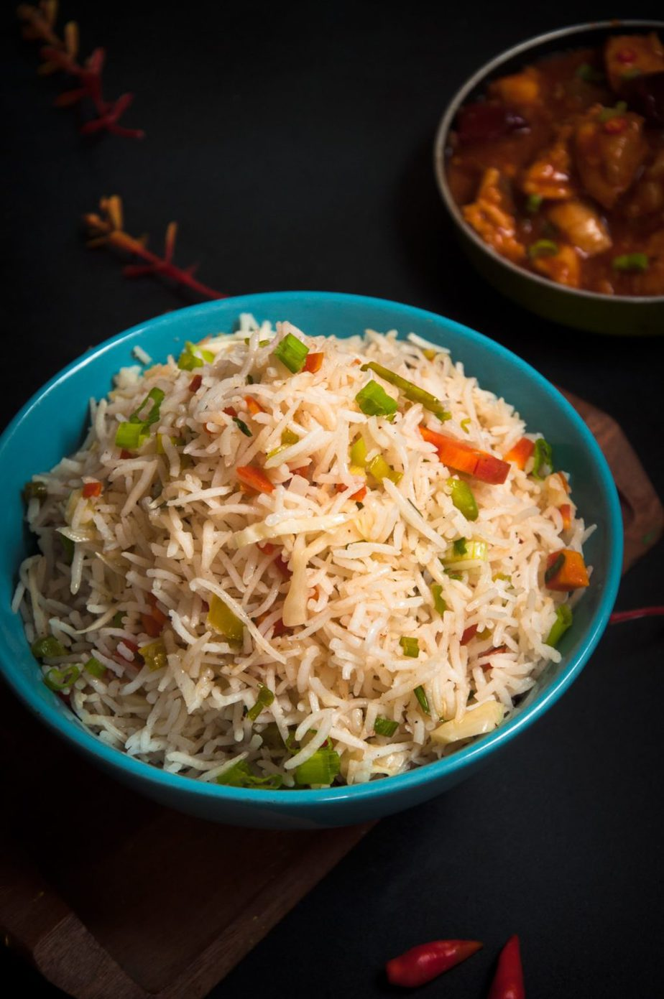
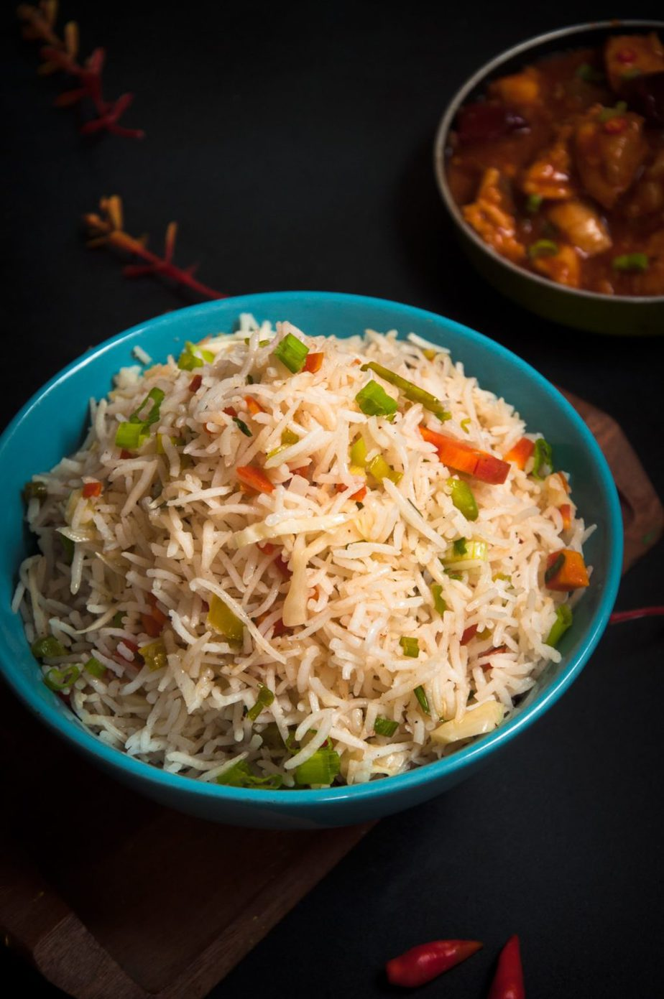

Best Indo-Chinese recipes to ever exist!!!
Make one :
- CHICKEN MANCHURIAN :

Did you know Chicken Manchurian is not Chinese in origin? It was first introduced in Calcutta, a city of India, by Nelson Wang. The Chinese style batter-fried chicken dunked in sweet and sour gravy was wedded with Indian spices, an extra burst of garlic, and soy sauce. Soon the dish was famous all over the city and similarly, many other pseudo-Indo-Chinese recipes were created to meet the Indian taste buds with fancy names. A vegetarian version of this dish called cauliflower or Gobi Manchurian is very famous.
- CHICKEN 65 :

Have you heard of Chicken 65? The best version of fried Indian Chicken— you’ll ever have. This is a super easy and super famous Indian chicken starter. Unlike other fried chicken that becomes dry upon cooling. Chicken 65 is a winner because, after frying, we season the chicken with aromatic spices and tomato sauce; this keeps the chicken juicy.
A.M Buhari invented and introduced this chicken in Buhari Restaurant in Chennai, Tamil Naidu, India.
- VEG FRIED RICE :

Who doesn't want an easy veg fried rice recipe that goes with almost anything? This is Indo-Chinese fried rice that uses basmati rice like any Indian fried recipe and has few Chinese touches in the form of soy sauce and sweet and sour background flavors.
Make one :
- CHICKEN MANCHURIAN :
- CHICKEN 65 :
- VEG FRIED RICE : 
Did you know Chicken Manchurian is not Chinese in origin? It was first introduced in Calcutta, a city of India, by Nelson Wang. The Chinese style batter-fried chicken dunked in sweet and sour gravy was wedded with Indian spices, an extra burst of garlic, and soy sauce. Soon the dish was famous all over the city and similarly, many other pseudo-Indo-Chinese recipes were created to meet the Indian taste buds with fancy names. A vegetarian version of this dish called cauliflower or Gobi Manchurian is very famous.
Have you heard of Chicken 65? The best version of fried Indian Chicken— you’ll ever have. This is a super easy and super famous Indian chicken starter. Unlike other fried chicken that becomes dry upon cooling. Chicken 65 is a winner because, after frying, we season the chicken with aromatic spices and tomato sauce; this keeps the chicken juicy. A.M Buhari invented and introduced this chicken in Buhari Restaurant in Chennai, Tamil Naidu, India.
Who doesn't want an easy veg fried rice recipe that goes with almost anything? This is Indo-Chinese fried rice that uses basmati rice like any Indian fried recipe and has few Chinese touches in the form of soy sauce and sweet and sour background flavors.